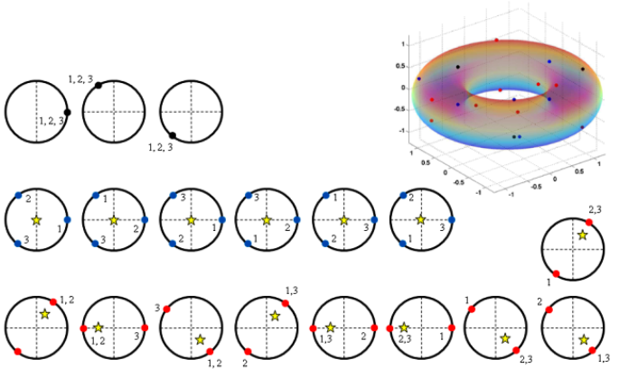

|
 |
In the early part of my graduate research, I worked on the nonlinear dynamics of complex systems. This line of research
involved phase synchronization and anti-synchronization between a pair of coupled limit cycle oscillators by controlling
time-delay, analysis of the collective dynamics of unicycles in leader-follower formation and the dynamics of a hysteretic relay oscillator with periodic forcing. Before joining graduate school, I worked on developing an autonomous recon�gurable unmanned air vehicle (UAV), that won the 2008 Best Dual degree Thesis Award; won a grant of INR 10 lakhs from Dept. of Science and Technology, Govt. of India; and the product idea was semifinalist for 2007 Wharton Business Plan competition. This work involved system identification, sensor design, development and fusion, path planning and camera stabilization. Here is the UAV flight test video with custom autopilot hardware and software. I also co-founded a research group on micro air vehicle (MAV) that has successfully designed, manufactured and flight tested a 15 gram fixed-wing MAV. Here are the videos for flight test 1 and flight test 2. In the UAV project, I had the unique leadership experience of heading a team of more than 80 undergraduate students from aerospace, electrical, mechanical, and electronics and communications engineering, over the course of 3 years.
|